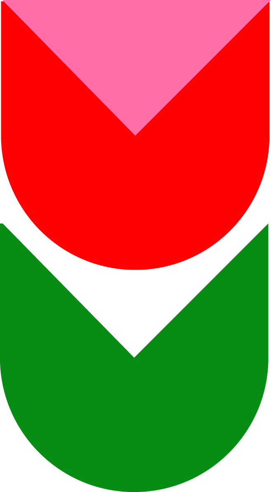

Lucía Belén Rovasio Aguirre es una diseñadora-ilustradora con residencia en Buenos Aires, Argentina. Está en su tercer año de la Licenciatura en Diseño de la Universidad Torcuato Di Tella.
Encontrala en Behance, Instagram, Twitter, Tumblr
y Pinterest.
Mail de contacto: Lube.rovasio@gmail.com
